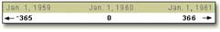
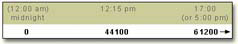
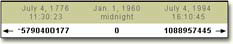
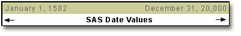
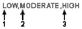
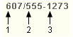
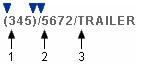
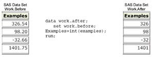
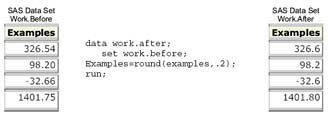

Overview
Introduction
When planning modifications to SAS data sets, be sure to examine the many SAS functions that are available. SAS functions are prewritten expressions that provide programming shortcuts for many calculations and manipulations of data.
This chapter teaches you how to use a variety of functions, such as those shown in the table below. You learn to convert data from one data type to another, to work with SAS date and time values, and to manipulate the values of character variables.
| Function | Description | Form | Sample Value |
|---|---|---|---|
| YEAR | Extracts the year value from a SAS date value | YEAR(date) | 2006 |
| QTR | Extracts the quarter value from a SAS date value | QTR(date) | 1 |
| MONTH | Extracts the month value from a SAS date value | MONTH(date) | 12 |
| DAY | Extracts the day value from a SAS date value | DAY(date) | 5 |
Objectives
In this chapter, you learn to
- convert character data to numeric data
- convert numeric data to character data
- create SAS date values
- extract the month, year, and interval from a SAS date value
- perform calculations with date and datetime values and time intervals
- extract, edit, and search the values of character variables
- replace or remove all occurrences of a particular word within a character string
Understanding SAS Functions
SAS functions are built-in routines that enable you to complete many types of data manipulations quickly and easily. Generally speaking, functions provide programming shortcuts. There are many categories of SAS functions: arithmetic functions, financial functions, character functions, probability functions, and more.
| Categories of SAS Functions | |
|---|---|
| Array | Mathematical |
| Bitwise Logical Operations | Probability |
| Character | Quantile |
| Character String Matching | Random Number |
| Currency Conversion | SAS File I/O |
| Date and Time | Special |
| Descriptive Statistics | State and Zip Code |
| Double Byte Character Set | Trigonometric |
| External Files | Truncation |
| Financial | Variable Control |
| Hyperbolic | Variable Information |
| Macro | Web Tools |
Some functions provide results that can also be obtained by using a SAS procedure. For example, functions that provide descriptive statistics return values that can also be obtained through the MEANS procedure.
| SAS Functions That Compute Descriptive Statistics | ||
|---|---|---|
| Function | Syntax | Calculates |
| SUM | sum(argument, argument,...) | sum of values |
| MEAN | mean(argument, argument,...) | average of nonmissing values |
| MIN | min(argument, argument,...) | minimum value |
| MAX | max(argument, argument,...) | maximum value |
| VAR | var(argument, argument,...) | variance of the values |
| STD | std(argument, argument,...) | standard deviation of the values |
Despite the similarity of certain SAS functions and procedures, don't assume that they can be used interchangeably. For example, missing values might be handled differently for a similar function and procedure.
Uses of SAS Functions
Using SAS functions, you can
- calculate sample statistics
- create SAS date values
- convert U.S. Zip codes to state postal codes
- round values
- generate random numbers
- extract a portion of a character value
- convert data from one data type to another
This chapter concentrates on functions that
- convert data
- manipulate SAS date values
- modify values of character variables
Example of a SAS Function
SAS functions can be used in DATA step programming statements and in some statistical procedures. A SAS function can be specified anywhere that you would use a SAS expression, as long as the function is part of a SAS statement.
Let's look at a simple example of a SAS function. The assignment statement below uses the MEAN function to calculate the average of three exam scores that are stored in the variables Exam1, Exam2, and Exam3.
AvgScore=mean(exam1,exam2,exam3);
When you reference a SAS function, the function returns a value that is based on the function arguments. The MEAN function above contains three arguments: the variables Exam1, Exam2, and Exam3. The function calculates the mean of the three variables that are listed as arguments.
| Note | Some functions require a specific number of arguments, whereas other functions can contain any number of arguments. Some functions require no arguments |
|---|
General Form of SAS Functions
Arguments, Variable Lists, Arrays
To use a SAS function, specify the function name followed by the function arguments, which are enclosed in parentheses.
General form, SAS function:
function-name(argument-1<,argument-n>);
where arguments can be
- variables P H D Q x,y,z
- constants P H D Q 456,502,612,498
- expressions P H D Q 37*2,192/5 mean(22,34,56)
| Warning | Even if the function does not require arguments, the function name must still be followed by parentheses- for example, function-name(). |
|---|
When a function contains more than one argument, the arguments are usually separated by commas.
function-name(argument-1,argument-2,argument-n)
However, for some functions, variable lists and arrays can also be used as arguments, as long as the list or the array is preceded by the word OF.
Example
Here is an example of a function that contains multiple arguments. Notice that the arguments are separated by commas.
mean(x1,x2,x3)
The arguments for this function can also be written as a variable list.
mean(of x1-x3)
Or, the variables can be referenced by an array.
mean(of newarray {*})
When specifying function arguments with a variable list or an array, be sure to precede the list or the array with the word OF. If you omit the word OF, the function arguments might not be interpreted as you expect. For example, the function below calculates the average of X1 minus X3, not the average of the variables X1, X2, and X3.
mean(x1-x3)
Target Variables
Now that you are familiar with the purpose and general form of SAS functions, let's think about target variables. A target variable is the variable to which the result of a function is assigned. For example, in the statement below, the variable AvgScore is the target variable.
AvgScore=mean(exam1,exam2,exam3);
Unless the length of the target variable has been previously defined, a default length is assigned. The default length depends on the function; the default for character functions can be as long as 200.
Default lengths could cause variables to use more space than necessary in your data set. So, when using SAS functions, consider the appropriate length for any target variables. If necessary, add a LENGTH statement to specify a length for the target variable before the statement that creates the values of that variable.
Converting Data with Functions
Introduction to Converting Data
Suppose you are asked to complete a number of modifications to the data set Hrd.Temp. The first modification is to create a new variable that contains the salary of temporary employees. Examining the data set, you realize that one of the variables needed to calculate salaries is the character variable PayRate. To complete the calculation, you need to convert PayRate from character to numeric.
| SAS Data Set Hrd.Temp | ||||||||
|---|---|---|---|---|---|---|---|---|
| City | State | Zip | Phone | StartDate | EndDate | PayRate | Days | Hours |
| CARY | NC | 27513 | 6224549 | 14567 | 14621 | 10 | 11 | 88 |
| CARY | NC | 27513 | 6223251 | 14524 | 14565 | 8 | 25 | 200 |
| CHAPEL HILL | NC | 27514 | 9974749 | 14570 | 14608 | 40 | 26 | 208 |
data hrd.newtemp;
set hrd.temp;
Salary=payrate*hours;
run;
In such cases, you should use the INPUT function before attempting the calculation. The INPUT function converts character data values to numeric values. The PUT function converts numeric data values to character values. Both functions are discussed in this section.
Potential Problems of Omitting INPUT or PUT
What happens if you omit the INPUT function or the PUT function when converting data?
SAS will detect the mismatched variables and will try an automatic character-to-numeric or numeric- to-character conversion. However, this process doesn't always work. Suppose each value of PayRate begins with a dollar sign ($). When SAS tries to automatically convert the values of PayRate to numeric values, the dollar sign blocks the process. The values cannot be converted to numeric values. Similar problems can occur with automatic numeric-to-character conversion.
Therefore, it is always best to include INPUT and PUT functions in your programs when conversions occur.
Automatic Character-to-Numeric Conversion
Let's begin with the automatic conversion of character values to numeric values.
By default, if you reference a character variable in a numeric context such as an arithmetic operation, SAS tries to convert the variable values to numeric. For example, in the DATA step below, the character variable PayRate appears in a numeric context. It is multiplied by the numeric variable Hours to create a new variable named Salary.
data hrd.newtemp;
set hrd.temp;
Salary=payrate*hours;
run;
When this step is executed, SAS automatically converts the character values of PayRate to numeric values so that the calculation can occur. This conversion is completed by creating a temporary numeric value for each character value of PayRate. This temporary value is used in the calculation. The character values of PayRate are not replaced by numeric values.
Whenever data is automatically converted, a message is written to the SAS log stating that the conversion has occurred.
SAS Log
4 data hrd.: newtemp;
5 set hrd.temp;
6 Salary=payrate*hours;
7 run;
NOTE: Character values have been converted to
numeric values at the places given by:
(Line):(Column).
6:11
NOTE: The data set Hrd.Newtemp has 40 observations
and 19 variables.
NOTE: The data statement used 0.78 seconds.
When Automatic Conversion Occurs
Automatic character-to-numeric conversion occurs when a character value is
- assigned to a previously defined numeric variable, such as the numeric variable Rate
Rate=payrate; - used in an arithmetic operation
Salary=payrate*hours; - compared to a numeric value, using a comparison operator
if payrate>=rate; - specified in a function that requires numeric arguments
NewRate=sum(payrate,raise);
The automatic conversion
- uses the w.d informat, where w is the width of the character value that is being converted
- produces a numeric missing value from any character value that does not conform to standard numeric notation (digits with an optional decimal point or leading sign)
| Character Value | automatic conversion | Numeric Value |
|---|---|---|
| 12.47 | -> | 12.47 |
| -8.96 | -> | -8.96 |
| 1.243E1 | -> | 12.43 |
| 1,742.64 | -> |
Restriction for WHERE Expressions
The WHERE statement does not perform automatic conversions in comparisons. The simple program below demonstrates what happens when a WHERE expression encounters the wrong data type. The variable Number contains a numeric value, and the variable Character contains a character value, but the two WHERE statements specify the wrong data type.
data work.convtest;
Number=4;
Character='4';
run;
proc print data=work.convtest;
where character=4;
run;
proc print data=work.convtest;
where number='4';
run;
This mismatch of character and numeric variables and values prevents the program from processing the WHERE statements. Automatic conversion is not performed. Instead, the program stops, and error messages are written to the SAS log.
1 data work.: convtest;
2 Number=4;
3 Character='4';
4 run;
NOTE: The data set Work.ConvTest has 1 observations and 2 variables.
5 proc print data=work.convtest;
6 where character=4;
7 run;
ERROR: Where clause operator requires compatible variables.
NOTE: The SAS System stopped processing this step because of errors.
8 proc print data=work.convtest;
9 where number='4';
10 run;
ERROR: Where clause operator requires compatible variables.
zzzz
NOTE: The SAS System stopped processing this step because of errors.
Explicit Character-to-Numeric Conversion
In order to avoid the problems we saw in the previous section, use the INPUT function to convert character data values to numeric values. To learn how to use this function, let's examine one of the data set modifications needed for Hrd.Temp. As mentioned earlier, you need to calculate employee salaries by multiplying the character variable PayRate by the numeric variable Hours.
| SAS Data Set Hrd.Temp | ||||||||
|---|---|---|---|---|---|---|---|---|
| City | State | Zip | Phone | StartDate | EndDate | PayRate | Days | Hours |
| CARY | NC | 27513 | 6224549 | 14567 | 14621 | 10 | 11 | 88 |
| CARY | NC | 27513 | 6223251 | 14524 | 14565 | 8 | 25 | 200 |
| CHAPEL HILL | NC | 27514 | 9974749 | 14570 | 14608 | 40 | 26 | 208 |
| RALEIGH | NC | 27612 | 6970450 | 14516 | 14527 | 15 | 10 | 80 |
To calculate salaries, you write the following DATA step. It creates a new data set, Hrd.Newtemp, to contain the original data plus the new variable Salary.
data hrd.newtemp;
set hrd.temp;
Salary=payrate*hours;
run;
However, you know that submitting this DATA step would cause an automatic character-tonumeric conversion, because the character variable PayRate is used in a numeric context. You can explicitly convert the character values of PayRate to numeric values by using the INPUT function.
General form, INPUT function:
INPUT(source,informat)
where
- source indicates the character variable, constant, or expression to be converted to a numeric value
- a numeric informat must also be specified, as in this example: input(payrate,2.)
When choosing the informat, be sure to select a numeric informat that can read the form of the values.
| Character Value | Informat |
|---|---|
| 2115233 | 7. |
| 2,115,233 | COMMA9. |
Here's an example of the INPUT function:
Test=input(saletest,comma9.);
The function uses the numeric informat COMMA9. to read the values of the character variable SaleTest. Then the resulting numeric values are stored in the variable Test.
Now let's use the INPUT function to convert the character values of PayRate to numeric values. You begin the function by specifying PayRate as the source. Because PayRate has a length of 2, you choose the numeric informat 2. to read the values of the variable.
input(payrate,2.)
Finally, you add the function to the assignment statement in your DATA step.
data hrd.newtemp;
set hrd.temp;
Salary=input(payrate,2.)*hours;
run;
After the DATA step is executed, the new data set (which contains the variable Salary) is created.
| SAS Data Set Hrd.Temp | |||||||||
|---|---|---|---|---|---|---|---|---|---|
| City | State | Zip | Phone | StartDate | EndDate | PayRate | Days | Hours | BirtDate |
| CARY | NC | 27513 | 6224549 | 14567 | 14621 | 10 | 11 | 88 | 7054 |
| CARY | NC | 27513 | 6223251 | 14524 | 14565 | 8 | 25 | 200 | 5757 |
Notice that no conversion messages appear in the SAS log when you use the INPUT function.
SAS Log
13 data hrd.: newtemp;
14 set hrd.temp;
15 Salary=input(payrate,2.)*hours;
16 run;
NOTE: The data set Hrd.Newtemp has 40 observations
and 19 variables.
NOTE: The DATA statement used 0.55 seconds.
The form of the INPUT function is very similar to the form of the PUT function (which performs numeric-to-character conversions).
INPUT(source,informat)
PUT(source,format)
However, note that the INPUT function requires an informat, whereas the PUT function requires a format. To remember which function requires a format versus an informat, note that the INPUT function requires the informat.
Automatic Numeric-to-Character Conversion
The automatic conversion of numeric data to character data is very similar to character-tonumeric conversion. Numeric data values are converted to character values whenever they are used in a character context.
For example, the numeric values of the variable Site are converted to character values if you
- assign the numeric value to a previously defined character variable, such as the character variable SiteCode: SiteCode=site
- use the numeric value with an operator that requires a character value, such as the concatenation operator: SiteCode=site||dept;
- specify the numeric value in a function that requires character arguments, such as the SUBSTR function: Region=substr(site,1,4);
Specifically, SAS writes the numeric value with the BEST12. format, and the resulting character value is right-aligned. This conversion occurs before the value is assigned or used with any operator or function. Automatic numeric-to-character conversion can cause unexpected results. For example, suppose the original numeric value has fewer than 12 digits. The resulting character value will have leading blanks, which might cause problems when you perform an operation or function.
Numeric-to-character conversion also causes a message to be written to the SAS log indicating that the conversion has occurred.
SAS Log
9 data hrd.: newtemp;
10 set hrd.temp;
11 SiteCode=site;
12 run;
NOTE: Numeric values have been converted to character
values at the places given by: (Line):(Column).
11:13
NOTE: The data set HRD.NEWTEMP has 40 observations
and 19 variables.
NOTE: The data statement used 1.06 seconds.
As we saw with the INPUT function, it is best not to rely on automatic conversion. When you know that numeric data must be converted to character data, perform an explicit conversion by including a PUT function in your SAS program. We look at the INPUT and PUT functions in the next section.
Explicit Numeric-to-Character Conversion
You can use the PUT function to explicitly convert numeric data values to character data values.
Let's use this function to complete one of the modifications that is needed for the data set Hrd.Temp. Suppose you are asked to create a new character variable named Assignment that concatenates the values of the numeric variable Site and the character variable Dept. The new variable values must contain the value of Site followed by a slash (/) and then the value of Dept- for example, 26/DP.
| SAS Data Set Hrd.Temp | ||||
|---|---|---|---|---|
| Overtime | Job | Contact | Dept | Site |
| 4 | Word processing | Word Processor | DP | 26 |
| . | Filing, administrative duties | Admin. Asst. | PURH | 57 |
| . | Organizational dev. specialist | Consultant | PERS | 34 |
| . | Bookkeeping, word processing | Bookkeeper Asst. | BK | 57 |
You write an assignment statement that contains the concatenation operator (||) to indicate that Site should be concatenated with Dept,using a slash as a separator. Note that the slash is enclosed in quotation marks. All character constants must be enclosed in quotation marks.
data hrd.newtemp;
set hrd.temp;
Assignment=site||'/'||dept;
run;
You know that submitting this DATA step will cause SAS to automatically convert the numeric values of Site to character values, because Site is used in a character context. The variable Site appears with the concatenation operator, which requires character values. To explicitly convert the numeric values of Site to character values, you must add the PUT function to your assignment statement.
General form, PUT function:
PUT(source,format)
where
- source indicates the numeric variable, constant, or expression to be converted to a character value
- a format matching the data type of the source must also be specified, as in this example: put(site,2.)
| Note |
|
|---|
Because you are listing a numeric variable as the source, you must specify a numeric format.
Now that you know the general form of the PUT function, you can rewrite the assignment statement in your DATA step to explicitly convert the numeric values of Site to character values.
To perform this conversion, write the PUT function, specifying Site as the source. Because Site has a length of 2, choose 2. as the numeric format. After you add this PUT function to the assignment statement, the DATA step creates the new data set that contains Assignment.
data hrd.newtemp;
set hrd.temp;
Assignment=put(site,2.)||'/'||dept;
run;
| SAS Data Set Hrd.Newtemp | ||||||
|---|---|---|---|---|---|---|
| Overtime | Job | Contact | Dept | Site | BirthDate | Assignment |
| 4 | Word processing | Word Processor | DP | 26 | 7054 | 26/DP |
| . | Filing, administrative duties | Admin. Asst. | PURH | 57 | 5757 | 57/PURH |
Notice that no conversion messages appear in the SAS log when you use the PUT function.
SAS Log
13 data hrd.: newtemp;
14 set hrd.temp;
15 Assignment=put(site,2.)||'/'||dept;
16 run;
NOTE: The data set Hrd.Newtemp has 40 observations
and 19 variables.
NOTE: The DATA statement used 0.71 seconds.
Matching the Data Type
Remember that the format specified in the PUT function must match the data type of the source.
PUT(source,format)
So, to do an explicit numeric-to-character data conversion, you specify a numeric source and a numeric format. The form of the PUT function is very similar to the form of the INPUT function.
PUT(source,format)
INPUT(source,informat)
Note that the PUT function requires a format, whereas the INPUT function requires an informat. To remember which function requires a format versus an informat, note that the INPUT function requires the informat.
Manipulating SAS Date Values with Functions
SAS Date and Time Values
SAS includes a variety of functions that enable you to work with SAS date values. SAS stores a date value as the number of days from January 1, 1960, to a given date. Here is an example:
A SAS time value is stored as the number of seconds since midnight. Here is an example:
Consequently, a SAS datetime value is stored as the number of seconds between midnight on January 1, 1960, and a given date and time.
SAS stores date values as numbers so that you can easily sort the values or perform arithmetic computations. You can use SAS date values as you use any other numeric values.
data test(keep=name totday);
set hrd.temp;
TotDay=enddate-startdate;
run;
| SAS Data Set Hrd.Temp | ||||||||
|---|---|---|---|---|---|---|---|---|
| City | State | Zip | Phone | StartDate | EndDate | PayRate | Days | Hours |
| CARY | NC | 27513 | 6224549 | 14567 | 14621 | 10 | 11 | 88 |
| CARY | NC | 27513 | 6223251 | 14524 | 14565 | 8 | 25 | 200 |
You can display SAS date values in a variety of forms by associating a SAS format with the values. The format affects only the display of the dates, not the date values in the data set. For example, the FORMAT statement below associates the DATE9. format with the variables StartDate and EndDate. A portion of the output created by this PROC PRINT step appears below.
proc print data=hrd.temp;
format startdate enddate date9.;
run;
| Days Hours | ||||||||
|---|---|---|---|---|---|---|---|---|
| City | State | Zip | Phone | StartDate | EndDate | PayRate | Days | Hours |
| CARY | NC | 27513 | 6224549 | 19NOV1999 | 12JAN2000 | 10 | 11 | 88 |
| CARY | NC | 27513 | 6223251 | 07OCT1999 | 17NOV1999 | 8 | 25 | 200 |
| CHAPEL HILL | NC | 27514 | 9974749 | 22NOV1999 | 30DEC1999 | 40 | 26 | 208 |
| RALEIGH | NC | 27612 | 6970450 | 29SEP1999 | 10OCT1999 | 15 | 10 | 80 |
SAS date values are valid for dates that are based on the Gregorian calendar from A.D. 1582 through A.D. 20,000.
| Note | Use caution when working with historical dates. The Gregorian calendar was used throughout most of Europe from 1582, but Great Britain and the American colonies did not adopt the calendar until 1752 |
|---|
SAS Date Functions
SAS stores dates, times, and datetimes as numeric values. You can use several functions to create these values.
| Function | Typical Use | Result |
|---|---|---|
| MDY | date=mdy(mon,day,yr); | SAS date |
| TODAY DATE | now=today(); now=date(); |
today's date as a SAS date |
| TIME | curtime=time(); | current time as a SAS time |
TIME curtime=time(); current time as a SAS time
You use other functions to extract months, quarters, days, and years from SAS date values.
| Function | Typical Use | Result |
|---|---|---|
| DAY | day=day(date); | day of month (1-31) |
| QTR | quarter=qtr(date); | quarter (1-4) |
| WEEKDAY | wkday=weekday(date); | day of week (1-7) |
| MONTH | month=month(date); | month (1-12) |
| INTCK | x=intck('day',d1,d2); x=intck('week',d1,d2); x=intck('month',d1,d2); x=intck('qtr',d1,d2); x=intck('year',d1, d2); |
days from D1 to D2 weeks from D1 to D2 months from D1 to D2 quarters from D1 to D2 years from D1 to D2 |
| INTNX | x=intnx('interval',start-from,increment); | date, time, or datetime value |
| DATDIF YRDIF |
x=datdif('date1',date2, ACT/ACT); x=yrdif('date1',date2, ACT/ACT); |
days between date1 and date2 years between date1 and date2 |
In the following pages, you will see several SAS date functions, showing how they are used to both create and extract date values.
YEAR, QTR, MONTH, and DAY Functions
Every SAS date value can be queried for the values of its year, month, and day. You extract these values by using the functions YEAR, QTR, MONTH, and DAY. They all work the same way, so we'll discuss them as a group.
General form, YEAR, QTR, MONTH, and DAY functions:
YEAR(date)
QTR(date)
MONTH(date)
DAY(date)
where date is a SAS date value that is specified either as a variable or as a SAS date constant.
The YEAR function returns a four-digit numeric value that represents the year- for example, 2002. The QTR function returns a value of 1, 2, 3, or 4 from a SAS date value to indicate the quarter of the year in which a date value falls. The MONTH function returns a numeric value that ranges from 1 to 12, representing the month of the year. The value 1 represents January, 2 represents February, and so on. The DAY function returns a numeric value from 1 to 31, representing the day of the month. As you can see, these functions are very similar in purpose and form.
| Function | Description | Form | Sample Value |
|---|---|---|---|
| YEAR | Extracts the year value from a SAS date value | YEAR(date) | 2005 |
| QTR | Extracts the quarter value from a SAS date value | QTR(date) | 1 |
| MONTH | Extracts the month value from a SAS date value | MONTH(date) | 12 |
| DAY | Extracts the day value from a SAS date value | DAY(date) | 5 |
Finding the Year
Now let's use the YEAR function to complete a task.
Suppose you need to create a subset of the data set Hrd.Temp that contains information about all temporary employees who were hired during a specific year, such as 1998. Hrd.Temp contains the dates on which employees began work with the company and their ending dates, but there is no year variable.
| SAS Data Set Hrd.Temp | ||||||||
|---|---|---|---|---|---|---|---|---|
| City | State | Zip | Phone | StartDate | EndDate | PayRate | Days | Hours |
| CARY | NC | 27513 | 6224549 | 14567 | 14621 | 10 | 11 | 88 |
| CARY | NC | 27513 | 6223251 | 14524 | 14565 | 8 | 25 | 200 |
| CHAPEL HILL | NC | 27514 | 9974749 | 14570 | 14608 | 40 | 26 | 208 |
| RALEIGH | NC | 27612 | 6970450 | 14516 | 14527 | 15 | 10 | 80 |
To determine the year in which employees were hired, you can apply the YEAR function to the variable that contains the employee start date, StartDate. You write the YEAR function as
year(startdate)
Then, to create the new data set, you include this function in a subsetting IF statement within a DATA step. This subsetting IF statement specifies that only observations in which the YEAR function extracts a value of 1998 are placed in the new data set.
data hrd.temp98;
set hrd.temp;
if year(startdate)=1998;
run;
Finally, you add a PROC PRINT step to the program so that you can view the new data set. Notice that the PROC PRINT step includes a FORMAT statement to display the variables StartDate and EndDate with the DATE9. format.
data hrd.temp98;
set hrd.temp;
if year(startdate)=1998;
proc print data=hrd.temp98;
format startdate enddate date9.;
run;
Here is a portion of the PROC PRINT output that is created by your program. Notice that the new data set contains information about those employees who were hired in 1998.
| SAS Data Set Hrd.Temp | ||||||||
|---|---|---|---|---|---|---|---|---|
| City | State | Zip | Phone | StartDate | EndDate | PayRate | Days | Hours |
| CHAPEL HILL | NC | 27514 | 9972070 | 02AUG1998 | 17AUG1998 | 12 | 12 | 96 |
| DURHAM | NC | 27713 | 3633020 | 06OCT1998 | 10OCT1998 | 10 | 5 | 40 |
Finding the Year and Month
Let's use the YEAR and MONTH functions to complete a simple task.
Suppose you need to create a subset of the data set Hrd.Temp that contains information about all temporary employees who were hired in November 1999. Hrd.Temp contains the beginning and ending dates for staff employment, but there are no month or year variables in the data set.
| SAS Data Set Hrd.Temp | ||||||||
|---|---|---|---|---|---|---|---|---|
| City | State | Zip | Phone | StartDate | EndDate | PayRate | Days | Hours |
| CARY | NC | 27513 | 6224549 | 14567 | 14621 | 10 | 11 | 88 |
| CARY | NC | 27513 | 6223251 | 14524 | 14565 | 8 | 25 | 200 |
| CHAPEL HILL | NC | 27514 | 9974749 | 14570 | 14608 | 40 | 26 | 208 |
| RALEIGH | NC | 27612 | 6970450 | 14516 | 14527 | 15 | 10 | 80 |
To determine the year in which employees were hired, you can apply the YEAR function to the variable that contains the employee start date, StartDate. You write the YEAR function as
year(startdate)
Likewise, to determine the month in which employees were hired, you apply the MONTH function to StartDate.
month(startdate)
To create the new data set, you include these functions in a subsetting IF statement within a DATA step. The subsetting IF statement specifies that the new data set includes only observations in which the YEAR function extracts a value of 1999 and the MONTH function extracts a value of 11 (for November).
data hrd.nov99;
set hrd.temp;
if year(startdate)=1999 and month(startdate)=11;
run;
Finally, you add a PROC PRINT step to the program so that you can view the new data set. Notice that the PROC PRINT step includes a FORMAT statement to display the variables StartDate and EndDate with the DATE9. format.
data hrd.nov99;
set hrd.temp;
if year(startdate)=1999 and month(startdate)=11;
proc print data=hrd.nov99;
format startdate enddate date9.;
run;
Here is a portion of the PROC PRINT output that is created by your program. Notice that the new data set contains information about only those employees who were hired in November 1999.
| City | State | Zip | Phone | StartDate | EndDate | PayRate | Days | Hours |
|---|---|---|---|---|---|---|---|---|
| CARY | NC | 27513 | 6224549 | 19NOV1999 | 12JAN2000 | 10 | 11 | 88 |
| CHAPEL HILL | NC | 27514 | 9974749 | 22NOV1999 | 30DEC1999 | 40 | 26 | 208 |
| DURHAM | NC | 27713 | 3633618 | 02NOV1999 | 13NOV1999 | 12 | 9 | 72 |
| CARRBORO | NC | 27510 | 9976732 | 16NOV1999 | 04JAN2000 | 15 | 7 | 64 |
WEEKDAY Function
The WEEKDAY function enables you to extract the day of the week from a SAS date value.
General form, WEEKDAY function:
WEEKDAY(date)
where date is a SAS date value that is specified either as a variable or as a SAS date constant.
The WEEKDAY function returns a numeric value from 1 to 7. The values represent the days of the week.
| Value | equals | Day of the Week |
|---|---|---|
| 1 | = | Sunday |
| 2 | = | Monday |
| 3 | = | Tuesday |
| 4 | = | Wednesday |
| 5 | = | Thursday |
| 6 | = | Friday |
| 7 | = | Saturday |
For example, suppose the data set Radio.Sch contains a broadcast schedule. The variable AirDate contains SAS date values. To create a data set that contains only weekend broadcasts, you use the WEEKDAY function in a subsetting IF statement. You include only observations in which the value of AirDate corresponds to a Saturday or Sunday.
data radio.schwkend;
set radio.sch;
if weekday(airdate)=7 or weekday(airdate)=1;
run;
MDY Function
The MDY function creates a SAS date value from numeric values that represent the month, day, and year. For example, suppose the data set Hrd.Temp contains the employee start date in three numeric variables, Month, Day, and Year.
| SAS Data Set Hrd.Temp | |||||||||
|---|---|---|---|---|---|---|---|---|---|
| City | State | Zip | Phone | Month | Day | Year | PayRate | Days | Hours |
| CARY | NC | 27513 | 6224549 | 1 | 12 | 2000 | 10 | 11 | 88 |
| CARY | NC | 27513 | 6223251 | 11 | 17 | 1999 | 8 | 25 | 200 |
| CHAPEL HILL | NC | 27514 | 9974749 | 12 | 30 | 1999 | 40 | 26 | 2008 |
| RALEIGH | NC | 27612 | 6970450 | 10 | 10 | 1999 | 15 | 10 | 80 |
Having the start date in three variables makes it difficult to perform calculations that are based on the length of employment. You can convert these numeric values to useful SAS date values by applying the MDY function.
General form, MDY function:
MDY(month,day,year)
where
- month can be a variable that represents the month, or a number from 1-12
- day can be a variable that represents the day, or a number from 1-31
- year can be a variable that represents the year, or a number that has 2 or 4 digits
In the data set Hrd.Temp, the values for month, day, and year are stored in the numeric variables Month, Day, and Year. You write the following MDY function to create the SAS date values:
mdy(month,day,year)
Then place this function in an assignment statement to create a new variable to contain the SAS date values.
data hrd.newtemp(drop=month day year);
set hrd.temp;
Date=mdy(month,day,year);
run;
Here is the new data set that contains the variable Date.
| SAS Data Set Hrd.Newtemp | |||||||
|---|---|---|---|---|---|---|---|
| City | State | Zip | Phone | PayRate | Days | Hours | Date |
| CARY | NC | 27513 | 6224549 | 10 | 11 | 88 | 14621 |
| CARY | NC | 27513 | 6223251 | 8 | 25 | 200 | 14565 |
| CHAPEL HILL | NC | 27514 | 9974749 | 40 | 26 | 208 | 14608 |
| RALEIGH | NC | 27612 | 6970450 | 15 | 10 | 80 | 14527 |
Remember, to display SAS date values in a more readable form, you can associate a SAS format with the values. For example, the FORMAT statement below associates the DATE9. format with the variable Date. A portion of the output that is created by this PROC PRINT step appears below.
proc print data=hrd.newtemp;
format date date9.;
run;
| City | State | Zip | Phone | PayRate | Days | Hours | Date |
|---|---|---|---|---|---|---|---|
| CARY | NC | 27513 | 6224549 | 10 | 11 | 88 | 12JAN2000 |
| CARY | NC | 27513 | 6223251 | 8 | 25 | 200 | 17NOV1999 |
| CHAPEL HILL | NC | 27514 | 9974749 | 40 | 26 | 208 | 30DEC1999 |
| RALEIGH | NC | 27612 | 6970450 | 15 | 10 | 80 | 10OCT1999 |
The MDY function can also add the same SAS date to every observation. This might be useful if you want to compare a fixed beginning date with differing end dates. Just use numbers instead of data set variables when providing values to the MDY function.
data hrd.newtemp;
set hrd.temp;
DateCons=mdy(6,17,2002);
proc print data=hrd.newtemp;
format datecons date9.;
run;
| City | State | Zip | Phone | PayRate | Days | Hours | DateCons |
|---|---|---|---|---|---|---|---|
| CARY | NC | 27513 | 6224549 | 10 | 11 | 88 | 17JUN2002 |
| CARY | NC | 27513 | 6223251 | 8 | 25 | 200 | 17JUN2002 |
| CHAPEL HILL | NC | 27514 | 9974749 | 40 | 26 | 208 | 17JUN2002 |
| RALEIGH | NC | 27612 | 6970450 | 15 | 10 | 80 | 17JUN2002 |
| Warning | Be careful when entering and formatting year values. The MDY function accepts two- digit values for the year, but SAS interprets two-digit values according to the 100-year span that is set by the YEARCUTOFF= system option. The default value of YEARCUTOFF= is 1920. For details, see Chapter, Reading Date and Time Values. |
|---|
Whenever possible, use four-digit year values in the MDY function:
- MDY(5,10,20) = May 10, 1920
- MDY(5,10,2020) = May 10, 2020
To display the years clearly, format SAS dates with the DATE9. format. This forces the year to appear with four digits, as shown above in the Date and DateCons variables of your Hrd.Newtemp output.
Let's look at another example of the MDY function. The data set Dec.Review contains a variable named Day. This variable contains the day of the month for each employee’s performance appraisal. The appraisals were all completed in December 1998.
| SAS Data Set Dec.Review | |||
|---|---|---|---|
| Site | Day | Rate | Name |
| Westin | 12 | A2 | Mitchell, K |
| Stockton | 4 | A5 | Worton, M |
| Center City | 17 | B1 | Smith, A |
The following DATA step uses the MDY function to create a new variable named ReviewDate. This variable contains the SAS date value for the date of each performance appraisal.
data dec.review98;
set dec.review;
ReviewDate=mdy(12,day,1998);
run;
| SAS Data Set Dec.Review98 | ||||
|---|---|---|---|---|
| Site | Day | Rate | Name | ReviewDate |
| Westin | 12 | A2 | Mitchell, K | 14225 |
| Stockton | 4 | A5 | Worton, M | 14217 |
| Center City | 17 | B1 | Smith, A | 14230 |
| Note | If you specify an invalid date in the MDY function, SAS assigns a missing value to the target variable |
|---|
data dec.review98;
set dec.review;
ReviewDate=mdy(15,day,1998);
run;
| SAS Data Set Dec.Review98 | ||||
|---|---|---|---|---|
| Site | Day | Rate | Name | ReviewDate |
| Westin | 12 | A2 | Mitchell, K | . |
| Stockton | 4 | A5 | Worton, M | . |
| Center City | 17 | B1 | Smith, A | . |
DATE and TODAY Functions
The DATE and TODAY functions return the current date from the system clock as a SAS date value. The DATE and TODAY functions have the same form and can be used interchangeably.
General form, DATE and TODAY functions:
DATE()
TODAY()
These functions require no arguments, but they must still be followed by parentheses.
Let's add a new variable, which contains the current date, to the data set Hrd.Temp. To create this variable, write an assignment statement such as the following:
EditDate=date();
After this statement is added to a DATA step and the step is submitted, the data set that contains EditDate is created.
data hrd.newtemp;
set hrd.temp;
EditDate=date();
run;
| Note | For this example, the SAS date values shown below were created by submitting this program on January 15, 2000 |
|---|
| SAS Data Set Hrd.Newtemp | |
|---|---|
| EndDate | EditDate |
| 14621 | 14624 |
| 14565 | 14624 |
| 14608 | 14624 |
Remember, to display these SAS date values in a different form, you can associate a SAS format with the values. For example, the FORMAT statement below associates the DATE9. format with the variable EditDate. A portion of the output that is created by this PROC PRINT step appears below.
proc print data=hrd.newtemp;
format editdate date9.;
run;
| SAS Data Set Hrd.Newtemp | |
|---|---|
| EndDate | EditDate |
| 14621> | 15JAN2000 |
| 14565 | 15JAN2000 |
| 14608 | 15JAN2000 |
The DATE and TODAY functions can also create a SAS date value from the current date.
ThisDate=date(); or ThisDate=today();
INTCK Function
The INTCK function returns the number of time intervals that occur in a given time span. You can use it to count the passage of days, weeks, months, and so on.
General form, INTCK function:
INTCK('interval',from,to)
where
- 'interval' specifies a character constant or variable. The value must be one of the
following:
DAY DTMONTH WEEKDAY DTWEEK WEEK HOUR TENDAY MINUTE SEMIMONTH SECOND MONTH QTR SEMIYEAR YEAR - from specifies a SAS date, time, or datetime value that identifies the beginning of the time span
- to specifies a SAS date, time, or datetime value that identifies the end of the time span
| Note | The type of interval (date, time, or datetime) must match the type of value in from |
|---|
The INTCK function counts intervals from fixed interval beginnings, not in multiples of an interval unit from the from value. Partial intervals are not counted. For example, WEEK intervals are counted by Sundays rather than seven-day multiples from the from argument. MONTH intervals are counted by day 1 of each month, and YEAR intervals are counted from 01JAN, not in 365-day multiples.
Consider the results in the following table. The values that are assigned to the variables Weeks, Months, and Years are based on consecutive days.
| SAS Statement | Value |
|---|---|
| Weeks = intck ('week','31 dec 2000'd,'01jan2001'd); | 0 |
| Months = intck ('month','31 dec 2000'd,'01jan2001'd); | 1 |
| Years = intck ('year','31 dec 2000'd,'01jan2001'd); | 1 |
Because December 31, 2000, is a Sunday, no WEEK interval is crossed between that day and January 1, 2001. However, both MONTH and YEAR intervals are crossed.
The following statement creates the variable Years and assigns it a value of 2. The INTCK function determines that 2 years have elapsed between June 15, 1999, and June 15, 2001.
Years=intck('year','15jun1999'd,'15jun2001'd);
| Note | As shown here, the from and to dates are often specified as date constants. A date constant is a date in the form ddMMMyyyy in quotation marks followed by the character d. |
|---|
Likewise, the following statement assigns the value 24 to the variable Months.
Months=intck('month','15jun1999'd,'15jun2001'd);
However, the following statement assigns 0 to the variable Years, even though 364 days have elapsed. In this case the YEAR boundary (01JAN) is not crossed.
Years=intck('year','01jan2002'd,'31dec2002'd);
Example: The INTCK Function
A common use of the INTCK function is to identify periodic events such as due dates and anniversaries.
The following program identifies mechanics whose 20th year of employment occurs in the current month. It uses the INTCK function to compare the value of the variable Hired to the date on which the program is run.
data work.anniv20;
set flights.mechanics
(keep=id lastname firstname hired);
Years=intck('year',hired,today());
if years=20 and month(hired)=month(today());
proc print data=work.anniv20;
title '20-Year Anniversaries This Month';
run;
The following output is created when the program is run in December 1999.
| 20-Year Anniversaries This Month | |||||
|---|---|---|---|---|---|
| Obs | ID | LastName | FirstName | Hired | Years |
| 1 | 1403 | BOWDEN | EARL | 24DEC79 | 20 |
| 2 | 1121 | HERNANDEZ | MICHAEL | 10DEC79 | 20 |
| 3 | 1412 | MURPHEY | JOHN | 08DEC79 | 20 |
INTNX Function
The INTNX function is similar to the INTCK function. The INTNX function applies multiples of a given interval to a date, time, or datetime value and returns the resulting value. You can use the INTNX function to identify past or future days, weeks, months, and so on.
General form, INTNX function:
INTNX('interval',start-from,increment<,'alignment'>)
where
- 'interval' specifies a character constant or variable
- start-from specifies a starting SAS date, time, or datetime value
- increment specifies a negative or positive integer that represents time intervals toward the past or future
- 'alignment' (optional) forces the alignment of the returned date to the beginning, middle, or end of the interval.
| Note | The type of interval (date, time, or datetime) must match the type of value in start-from and increment. |
|---|
When you specify date intervals, the value of the character constant or variable that is used in interval must be one of the following:
| DAY | DTMONTH |
| WEEKDAY | DTWEEK |
| WEEK | HOUR |
| TENDAY | MINUTE |
| SEMIMONTH | SECOND |
| MONTH | |
| QTRSEMIYEAR | |
| YEAR |
For example, the following statement creates the variable TargetYear and assigns it a SAS date value of 13515, which corresponds to January 1, 1997.
TargetYear=intnx('year','05feb94'd,3);
Likewise, the following statement assigns the value for the date July 1, 2001, to the variable TargetMonth.
TargetMonth=intnx('semiyear','01jan2001'd,1);
As you know, SAS date values are based on the number of days since January 1, 1960. Yet the INTNX function can use intervals of weeks, months, years, and so on. What day should be returned when these larger intervals are used?
That's the purpose of the optional alignment argument: it lets you specify whether the date value should be at the beginning, middle, or end of the interval. When specifying date alignment in the INTNX function, use the following arguments or their corresponding aliases:
BEGINNING B
MIDDLE M
END E
SAMEDAY S
The best way to understand the alignment argument is to see its effect on identical statements. The following table shows the results of three INTNX statements that differ only in the value of alignment.
| SAS Statement | Date Value |
|---|---|
| MonthX=intnx('month','01jan95'd,5,'b'); | 12935 (June 1, 1995) |
| MonthX=intnx('month','01jan95'd,5,'m'); | m'); 12949 (June 15, 1995) |
| MonthX=intnx('month','01jan95'd,5,'e'); | 12964 (June 30, 1995) |
These statements count five months from January, but the returned value depends on whether alignment specifies the beginning, middle, or end day of the resulting month. If alignment is not specified, the beginning day is returned by default.
DATDIF and YRDIF Functions
The DATDIF and YRDIF functions calculate the difference in days and years between two SAS dates, respectively. Both functions accept start dates and end dates that are specified as SAS date values. Also, both functions use a basis argument that describes how SAS calculates the date difference.
General form, DATDIF and YRDIF functions:
DATDIF(start_date,end_date,basis)
YRDIF(start_date,end_date,basis)
where
- start_date specifies the starting date as a SAS date value
- end_date specifies the ending date as a SAS date value
- basis specifies a character constant or variable that describes how SAS calculates the date difference
There are two character strings that are valid for basis in the DATDIF function and four character strings that are valid for basis in the YRDIF function. These character strings and their meanings are listed in the table below.
| Character String | Meaning | Valid In DATDIF | Valid In YRDIF |
|---|---|---|---|
| '30/360' | specifies a 30 day month and a 360 day year | yes | yes |
| 'ACT/ACT' | uses the actual number of days or years between dates | yes | yes |
| 'ACT/360' | uses the actual number of days between dates in calculating the number of years (calculated by the number of days divided by 360) | no | yes |
| 'ACT/365' | uses the actual number of days between dates in calculating the number of years (calculated by the number of days divided by 365) | no | yes |
Modifying Character Values with Functions
Introduction to Modifying Character Values
This section teaches you how to use SAS functions to manipulate the values of character variables. After completing this section, you will be able to
- replace the contents of a character value
- trim trailing blanks from a character value
- search a character value and extract a portion of the value
- convert a character value to uppercase or lowercase
To begin, let's look at some of the modifications that need to be made to the character variables in Hrd.Temp. These modifications include
- separating the values of one variable into multiple variables
Name LastName FirstName Middle Name CICHOCK, ELIZABETH MARIE CICHOCK ELIZABETH MARIE BENINCASA, HANNAH LEE BENINCASA HANNAH LEE
- replacing a portion of a character variable's values
Phone Phone 6224549 4334549 6223251 4333251
- searching for a specific string within a variable's values
Job filing, administrative duties bookkeeping, word processing, accounting
The character functions listed below can help you complete these tasks.
Function Purpose SCAN returns a specified word from a character value. SUBSTR extracts a substring or replaces character values. TRIM trims trailing blanks from character values. CATX concatenates character strings, removes leading and trailing blanks, and inserts separators. INDEX searches a character value for a specific string. FIND searches for a specific substring of characters within a character string that you specify. UPCASE converts all letters in a value to uppercase. LOWCASE converts all letters in a value to lowercase. PROPCASE converts all letters in a value to proper case. TRANWRD replaces or removes all occurrences of a pattern of characters within a character string.
SCAN Function
The SCAN function enables you to separate a character value into words and to return a specified word. Let's look at the following example to see how the SCAN function works.
The data set Hrd.Temp stores the names of temporary employees in the variable Name. The Name variable contains the employees's first, middle, and last names.
SAS Data Set Hrd.Temp Agency ID Name Administrative Support, Inc. F274 CICHOCK, ELIZABETH MARIE Administrative Support, Inc. F101 BENINCASA, HANNAH LEE
However, suppose you want to separate the value of Name into three variables: one variable to store the first name, one to store the middle name, and one to store the last name. You can use the SCAN function to create these new variables.
SAS Data Set Hrd.Temp Agency ID LastName FirstName MiddleName Administrative Support, Inc. F274 CICHOCK ELIZABETH MARIE Administrative Support, Inc. F101 BENINCASA HANNAH LEE
Specifying Delimiters
The SCAN function uses delimiters, which are characters that are specified as word separators, to separate a character string into words. For example, if you are working with the character string below and you specify the comma as a delimiter, the SCAN function separates the string into three words.
Then the function returns whichever word you specify. In this example, if you specify the third word, the SCAN function returns the word HIGH.
Here's another example. Once again, let's use the comma as a delimiter, and specify that the third word be returned.
209 RADCLIFFE ROAD, CENTER CITY, NY, 92716
In this example, the word returned by the SCAN function is NY.
Specifying Multiple Delimiters
When using the SCAN function, you can specify as many delimiters as needed to correctly separate the character expression. When you specify multiple delimiters, SAS uses all of the delimiters as word separators. For example, if you specify both the slash and the hyphen as delimiters, the SCAN function separates the following text string into three words:
The SCAN function treats two or more contiguous delimiters, such as the parenthesis and slash below, as one delimiter. Also, leading delimiters have no effect.
Default Delimiters
If you do not specify delimiters when using the SCAN function, default delimiters are used. The default delimiters are
blank . < ( + | & ! $ * ) ; ^ - / , %
SYNTAX
Now that you are familiar with how the SCAN function works, let's examine the syntax of the function.
General form, SCAN function:
SCAN(argument,n,delimiters)
where
- argument specifies the character variable or expression to scan
- n specifies which word to read
- delimiters are special characters that must be enclosed in single quotation marks (' ')
Use the SCAN function to create your new name variables for Hrd.Temp. To begin, examine the values of the existing Name variable to determine which characters separate the names in the values. Notice that blanks and commas appear between the names and that the employee's last name appears first, then the first name, and then the middle name.
SAS Data Set Hrd.Temp Agency ID Name Administrative Support, Inc. F274 CICHOCK, ELIZABETH MARIE Administrative Support, Inc. F101 BENINCASA, HANNAH LEE OD Consulting, Inc. F054 SHERE, BRIAN THOMAS New Time Temps Agency F077 HODNOFF, RICHARD LEE
To create the LastName variable to store the employee's last name, you write an assignment statement that contains the following SCAN function:
LastName=scan(name,1,' ,');
Note that a blank and a comma are specified as delimiters. You can also write the function without listing delimiters, because the blank and comma are default delimiters
LastName=scan(name,1);
The complete DATA step that is needed to create LastName, FirstName, and MiddleName appears below. Notice that the original Name variable is dropped from the new data set.
data hrd.newtemp(drop=name); set hrd.temp; LastName=scan(name,1); FirstName=scan(name,2); MiddleName=scan(name,3); run;Specifying Variable Length
Note that the SCAN function assigns a length of 200 to each target variable. (Remember, a target variable is the variable that receives the result of the function.) So, if you submit the DATA step above, the LastName, FirstName, and MiddleName variables are each assigned a length of 200. This length is longer than necessary for these variables.
To save storage space, add a LENGTH statement to your DATA step, and specify an appropriate length for all three variables. Because SAS sets the length of a new character variable the first time it is encountered in the DATA step, be sure to place the LENGTH statement before the assignment statements that contain the SCAN function.
data hrd.newtemp(drop=name); set hrd.temp; length LastName FirstName MiddleName $ 10; lastname=scan(name,1); firstname=scan(name,2); middlename=scan(name,3); run;SUBSTR Function
The SUBSTR function can be used to
- extract a portion of a character value
- replace the contents of a character value
Let's begin with the task of extracting a portion of a value. In the data set Hrd.Newtemp, the names of temporary employees are stored in three name variables: LastName, FirstName, and MiddleName.
SAS Data Set Hrd.Newtemp Agency ID LastName Firstname MiddleName Administrative Support, Inc. F274 CICHOCK ELIZABETH MARIE Administrative Support, Inc. F101 BENINCASA HANNAH LEE OD Consulting, Inc. F054 SHERE BRIAN THOMAS New Time Temps Agency F077 HODNOFF RICHARD LEE
However, suppose you want to modify the data set to store only the middle initial instead of the full middle name. To do so, you must extract the first letter of the middle name values and assign these values to the new variable MiddleInitial.
SAS Data Set Work.Newtemp Agency ID LastName FirstName MiddleInitial Administrative Support, Inc. F274 CICHOCK ELIZABETH M Administrative Support, Inc. F101 BENINCASA HANNAH L OD Consulting, Inc. F054 SHERE BRIAN T New Time Temps Agency F077 HODNOFF RICHARD L
The SUBSTR function enables you to extract any number of characters from a character string, starting at a specified position in the string.
General form, SUBSTR function:
SUBSTR(argument,position,
) where
- argument specifies the character variable or expression to scan
- position is the character position to start from
- n specifies the number of characters to extract. If n is omitted, all remaining characters are included in the substring
Using the SUBSTR function, you can extract the first letter of the MiddleName value to create the new variable MiddleInitial.
SAS Data Set Hrd.Newtemp Agency ID LastName Firstname MiddleName Administrative Support, Inc. F274 CICHOCK ELIZABETH MARIE Administrative Support, Inc. F101 BENINCASA HANNAH LEE OD Consulting, Inc. F054 SHERE BRIAN THOMAS New Time Temps Agency F077 HODNOFF RICHARD LEE
You write the SUBSTR function as:
substr(middlename,1,1)
This function specifies that a character string be extracted from the value of MiddleName. The string to be extracted begins in position 1 and contains one character. Then, you place this function in an assignment statement in your DATA step.
data work.newtemp(drop=middlename); set hrd.newtemp; MiddleInitial=substr(middlename,1,1); run;The new MiddleInitial variable is given the same length as MiddleName. The MiddleName variable is then dropped from the new data set.
SAS Data Set Work.Newtemp Agency ID LastName FirstName MiddleInitial Administrative Support, Inc. F274 CICHOCK ELIZABETH M Administrative Support, Inc. F101 BENINCASA HANNAH L OD Consulting, Inc. F054 SHERE BRIAN T New Time Temps Agency F077 HODNOFF RICHARD L
You can use the SUBSTR function to extract a substring from any character value if you know the position of the value.
Positioning the SUBSTR Function
SAS uses the SUBSTR function to extract a substring or to modify a variable's values, depending on the position of the function in the assignment statement.
When the function is on the right side of an assignment statement, the function returns the requested string.
MiddleInitial=substr(middlename,1,1);
But if you place the SUBSTR function on the left side of an assignment statement, the function is used to modify variable values.
substr(region,1,3)='NNW';
When the SUBSTR function modifies variable values, the right side of the assignment statement must specify the value to place into the variable. For example, to replace the fourth and fifth characters of a variable named Test with the value 92, you write the following assignment statement:
substr(test,4,2)='92';
Test Test S7381K2 -> S7392K2 S7381K7 -> S7392K7
Replacing Text
There is a second use for the SUBSTR function. This function can also be used to replace the contents of a character variable. For example, suppose the local phone exchange 622 was replaced by the exchange 433. You need to update the character variable Phone in Hrd.Temp to reflect this change.
SAS Data Set Hrd.Temp City State Zip Phone StartDate EndDate PayRate Days Hours CARY NC 27513 6224549 14567 14621 10 11 88 CARY NC 27513 6223251 14524 14565 8 25 200 CHAPEL HILL NC 27514 9974749 14570 14608 40 26 208 RALEIGH NC 27612 6970450 14516 14527 15 10 80
You can use the SUBSTR function to complete this modification. The syntax of the SUBSTR function, when used to replace a variable’s values, is identical to the syntax for extracting a substring.
SUBSTR(argument,position,n)
However, in this case,
- the first argument specifies the character variable whose values are to be modified
- the second argument specifies the position at which the replacement is to begin
- the third argument specifies the number of characters to replace. If n is omitted, all remaining characters are replaced
Now let's use the SUBSTR function to replace the 622 exchange in the variable Phone. You begin by writing this assignment statement:
data hrd.temp2; set hrd.temp; substr(phone,1,3)='433'; run;This statement specifies that the new exchange 433 should be placed in the variable Phone, starting at character position 1 and replacing three characters.
SAS Data Set Hrd.Temp City State Zip Phone StartDate EndDate PayRate Days Hours CARY NC 27513 6224549 14567 14621 10 11 88 CARY NC 27513 6223251 14524 14565 8 25 200 CHAPEL HILL NC 27514 9974749 14570 14608 40 26 208 RALEIGH NC 27612 6970450 14516 14527 15 10 80
But executing this DATA step places the value 433 into all values of Phone. You only need to replace the values of Phone that contain the 622 exchange. So, you add an assignment statement to the DATA step to extract the exchange from Phone. Notice that the SUBSTR function is used on the right side of the assignment statement.
data hrd.temp2(drop=exchange); set hrd.temp; Exchange=substr(phone,1,3); substr(phone,1,3)='433'; run;Now the DATA step needs an IF-THEN statement to verify the value of the variable Exchange. If the exchange is 622, the assignment statement executes to replace the value of Phone.
data hrd.temp2(drop=exchange); set hrd.temp; Exchange=substr(phone,1,3); if exchange='622' then substr(phone,1,3)='433'; run;After the DATA step is executed, the appropriate values of Phone contain the new exchange.
SAS Data Set Hrd.Temp City State Zip Phone StartDate EndDate PayRate Days Hours CARY NC 27513 4334549 14567 14621 10 11 88 CARY NC 27513 4333251 14524 14565 8 25 200 CHAPEL HILL NC 27514 9974749 14570 14608 40 26 208
Once again, remember the rules for using the SUBSTR function. If the SUBSTR function is on the right side of an assignment statement, the function extracts a substring.
MiddleInitial=substr(middlename,1,1);
If the SUBSTR function is on the left side of an assignment statement, the function replaces the contents of a character variable.
substr(region,1,3)='NNW';
SCAN Function Compared with SUBSTR Function
The SCAN function is similar to the SUBSTR function. Let's briefly compare the two. Both the SCAN and SUBSTR functions can extract a substring from a character value:
- SCAN extracts words within a value that is marked by delimiters
- SUBSTR extracts a portion of a value by starting at a specified location
The SUBSTR function is best used when you know the exact position of the substring that you want to extract from the character value. The substring does not need to be marked by delimiters. For example, the first two characters of the variable ID identify the class level of college students. The position of these characters does not vary within the values of ID.
SAS Data Name ID Trentonson, Matthew Robert SO45467 Truell, Marcia Elizabeth SR32881
The SUBSTR function is the best choice to extract class level information from ID. By contrast, the SCAN function is best used when
- you know the order of the words in the character value
- the starting position of the words varies
- the words are marked by some delimiter
TRIM Function
The TRIM function enables you to remove trailing blanks from character values. To learn about the TRIM function, let's modify the data set Hrd.Temp.
The data set Hrd.Temp contains four address variables: Address, City, State, and Zip.
SAS Data Set Hrd.Temp (Selected Variables) Agency ID Name Address City State Zip Administrative Support, Inc. F274 CICHOCK, ELIZABETH MARIE 65 ELM DR CARY NC 27513 Administrative Support, Inc F101 BENINCASA, HANNAH LEE 11 SUN DR CARY NC 27513
You need to create one address variable that contains the values of the three variables Address, City, and Zip. (Because all temporary employees are hired locally, the value of State does not need to be included in the new variable.)
SAS Data Set Hrd.NewTemp Agency ID Name NewAddress Administrative Support, Inc. F274 CICHOCK, ELIZABETH MARIE 65 ELM DR, CARY, 27513 Administrative Support, Inc. F101 BENINCASA, HANNAH LEE 11 SUN DR, CARY, 27513
Writing a DATA step to create this new variable is easy. You include an assignment statement that contains the concatenation operator (||), as shown below.
data hrd.newtemp(drop=address city state zip); set hrd.temp; NewAddress=address || ', ' || city || ', ' || zip; run;The concatenation operator (||) enables you to concatenate character values. In this assignment statement, the character values of Address, City, and Zip are concatenated with two character constants that consist of a comma and a blank. The commas and blanks are needed to separate the street, city, and ZIP code values. The length of NewAddress is the sum of the length of each variable and constant that is used to create the new variable. Notice that this DATA step drops the original address variables from the new data set.
When the DATA step is executed, you notice that the values of NewAddress do not appear as expected. The values of the new variable contain embedded blanks.
SAS Data Set Hrd.NewTemp NewAddress 65 ELM DRIVE , CARY , 27513 11 SUN DRIVE , CARY , 27513 712 HARDWICK STREET , CHAPEL HILL , 27514 5372 WHITEBUD ROAD , RALEIGH , 27612
These blanks appear in the values of NewAddress because the values of the original address variables contained trailing blanks. Whenever the value of a character variable does not match the length of the variable, SAS pads the value with trailing blanks.
Address length=32 City length=15 Zip length=5 65 ELM DRIVE............... RALEIGH........ 27612 11 SUN DRIVE............... DURHAM......... 27612 712 HARTWICK STREET........ CHAPEL HILL.... 27514
So, when the original address values are concatenated to create NewAddress, the trailing blanks in the original values are included in the values of the new variable. The variable Zip is the only one that does not contain trailing blanks.
NewAddress length=56 65 ELM DRIVE................., RALEIGH........, 27612 11 SUN DRIVE................., DURHAM........., 27612 712 HARTWICK STREET.........., CHAPEL HILL...., 27514
The TRIM function enables you to remove trailing blanks from character values.
General form, TRIM function:
TRIM(argument)
where argument can be any character expression, such as
- a character variable: trim(address)
- another character function: trim(left(id))
To remove the blanks from the variable NewAddress, include the TRIM function in your assignment statement. Trim the values of Address and City.
data hrd.newtemp(drop=address city state zip); set hrd.temp; NewAddress=trim(address)||', '||trim(city)||', '||zip; run;The revised DATA step creates the values that you expect for NewAddress.
SAS Data Set Hrd.Newtemp NewAddress 65 ELM DRIVE, CARY, 27513 11 SUN DRIVE, CARY, 27513 712 HARDWICK STREET, CHAPEL HILL, 27514 5372 WHITEBUD ROAD, RALEIGH, 27612
Points to Remember
Keep in mind that the TRIM function does not affect how a variable is stored. Suppose you trim the values of a variable and then assign these values to a new variable. The trimmed values are padded with trailing blanks again if the values are shorter than the length of the new variable.
Here's an example. In the DATA step below, the trimmed value of Address is assigned to the new variable Street. When the trimmed value is assigned to Street, trailing blanks are added to the value to match the length of 20.
data temp; set hrd.temp; length Street $ 20; Street=trim(address); run;Address length=32 Street length=20 65 ELM DRIVE.................. 65 ELM DRIVE........ 11 SUN DRIVE.................. 11 SUN DRIVE........ 712 HARTWICK STREET........... 712 HARTWICK STREET.
CATX Function
The CATX function enables you to concatenate character strings, remove leading and trailing blanks, and insert separators. The CATX function returns a value to a variable, or returns a value to a temporary buffer. The results of the CATX function are usually equivalent to those that are produced by a combination of the concatenation operator and the TRIM and LEFT functions.
Remember that you learned to use the TRIM function along with the concatenation operator to create one address variable that contains the values of the three variables Address, City, and Zip, and to remove extra blanks from the new values. You used the DATA step shown below.
data hrd.newtemp(drop=address city state zip); set hrd.temp; NewAddress=trim(address)||', '||trim(city)||', '||zip; run;You can accomplish the same concatenation using only the CATX function.
General form, CATX function:
CATX(separator,string-1 <,...string-n> )
where
- separator specifies the character string that is used as a separator between concatenated strings
- string specifies a SAS character string
You want to create the new variable NewAddress by concatenating the values of the Address, City, and Zip variables from the data set Hrd.Temp. You want to strip excess blanks from the old variable values and separate the variable values with a comma. The DATA step below uses the CATX function to create NewAddress.
data hrd.newtemp(drop=address city state zip); set hrd.temp; NewAddress=catx(', ',address,city,zip); run;The revised DATA step creates the values that you expect for NewAddress.
SAS Data Set Hrd.Newtemp NewAddress 65 ELM DRIVE, CARY, 27513 11 SUN DRIVE, CARY, 27513 712 HARDWICK STREET, CHAPEL HILL, 27514 5372 WHITEBUD ROAD, RALEIGH, 27612
INDEX Function
The INDEX function enables you to search a character value for a specified string. The INDEX function searches values from left to right, looking for the first occurrence of the string. It returns the position of the string's first character; if the string is not found, it returns a value of 0.
Suppose you need to search the values of the variable Job, which lists job skills. You want to create a data set that contains the names of all temporary employees who have word processing experience.
SAS Data Set Hrd.Temp Job Contact Dept Site word processing WORD PROCESSOR DP 26 filing, administrative duties ADMIN. ASST. PURH 57 organizational dev. specialist CONSULTANT PERS 34
The INDEX function can complete this search.
General form, INDEX function:
INDEX(source,excerpt)
where
- source specifies the character variable or expression to search
- excerpt specifies a character string that is enclosed in quotation marks (' ')
To search for the occurrences of word processing in the values of the variable Job, you write the INDEX function as shown below. Note that the character string is enclosed in quotation marks.
index(job,'word processing')
Then, to create the new data set, include the INDEX function in a subsetting IF statement. Only those observations in which the function locates the string and returns a value greater than 0 are written to the data set.
data hrd.datapool; set hrd.temp; if index(job,'word processing') > 0; run;Here's your data set that shows the temporary employees who have word processing experience.
SAS Data Set Hrd.Datapool Job Contact Dept Site word processing WORD PROCESSOR DP 26 bookkeeping, word processing BOOKKEEPER AST BK 57 word processing, sec. work WORD PROCESSOR DP 95 bookkeeping, word processing BOOKKEEPER AST BK 44 word processing WORD PROCESSOR DP 59 word processing, sec. work WORD PROCESSOR PUB 38 word processing WORD PROCESSOR DP 44 word processing WORD PROCESSOR DP 90
Note that the INDEX function is case sensitive, so the character string that you are searching for must be specified exactly as it is recorded in the data set. For example, the INDEX function shown below would not locate any employees who have word processing experience.
index(job,'WORD PROCESSING')
SAS Data Set Hrd.Datapool Job Contact Dept Site word processing WORD PROCESSOR DP 26 filing, administrative duties ADMIN. ASST. PURH 57 organizational dev. specialist CONSULTANT PERS 34 bookkeeping, word processing BOOKKEEPER ASST. BK 57
Finding a String Regardless of Case
To ensure that all occurrences of a character string are found, you can use the UPCASE or LOWCASE function with the INDEX function. The UPCASE and LOWCASE functions enable you to convert variable values to uppercase or lowercase letters. You can then specify the character string in the INDEX function accordingly.
index(upcase(job),'WORD PROCESSING')
index(lowcase(job),'word processing')
FIND Function
The FIND function enables you to search for a specific substring of characters within a character string that you specify. The FIND function searches a string for the first occurrence of the substring, and returns the position of that substring. If the substring is not found in the string, FIND returns a value of 0.
The FIND function is similar to the INDEX function. Remember that you used the INDEX function to search the values of the variable Job in Hrd.Temp in order to create a data set that contains the names of all temporary employees who have word processing experience.
SAS Data Set Hrd.Datapool Job Contact Dept Site word processing WORD PROCESSOR DP 26 filing, administrative duties ADMIN. ASST. PURH 57 organizational dev. specialist CONSULTANT PERS 34
You can also use the FIND function to complete this search.
General form, FIND function:
FIND(string,substring<,modifiers><,startpos> )
where
- string specifies a character constant, variable, or expression that will be searched for substrings
- substring is a character constant, variable, or expression that specifies the substring of characters to seach for in string
- modifiers is a character constant, variable, or expression that specifies one or more modifiers
- startpos is an integer that specifies the position at which the search should start and the direction of the search
Note If string or substring is a character literal, you must enclose it in quotation marks
The modifiers argument enables you to specify one or more modifiers for the function, as listed below.
- The modifier i causes the FIND function to ignore character case during the search. If this modifier is not specified, FIND searches for character substrings with the same case as the characters in substring
- The modifier t trims trailing blanks from string and substring
Note If string or substring is a character literal, you must enclose it in quotation marks
If startpos is not specified, FIND starts the search at the beginning of the string and searches the string from left to right. If startpos is specified, the absolute value of startpos determines the position at which to start the search. The sign of startpos determines the direction of the search. If startpos is positive, FIND searches from startpos to the right; and if startpos is negative, FIND searches from startpos to the left.
Example
The values of the variable Job are all lowercase. Therefore, to search for the occurrence of word processing in the values of the variable Job, you write the FIND function as shown below. Note that the character substring is enclosed in quotation marks.
find(job,'word processing','t')
Then, to create the new data set, include the FIND function in a subsetting IF statement. Only those observations in which the function locates the string and returns a value greater than 0 are written to the data set.
data hrd.datapool; set hrd.temp; if find(job,'word processing','t') > 0; run;UPCASE Function
The UPCASE function converts all letters in a character expression to uppercase.
General form, UPCASE function:
UPCASE(argument)
where argument can be any SAS expression, such as a character variable or constant.
Let's use the UPCASE function to convert the values of a character variable in Hrd.Temp. The values of the variable Job appear in lowercase letters.
SAS Data Set Hrd.Temp Job Contact Dept Site word processing WORD PROCESSOR DP 26 filing, administrative duties ADMIN. ASST. PURH 57 organizational dev. specialist CONSULTANT PERS 34 bookkeeping, word processing BOOKKEEPER ASST. BK 57
To convert the values of Job to uppercase, you write the UPCASE function as follows:
upcase(job)
Then place the function in an assignment statement in a DATA step.
data hrd.newtemp; set hrd.temp; Job=upcase(job); run;Here's the new data set that contains the converted values of Job.
SAS Data Set Hrd.Temp Job Contact Dept Site WORD PROCESSING WORD PROCESSOR DP 26 FILING, ADMINISTRATIVE DUTIES ADMIN. ASST. PURH 57 ORGANIZATIONAL DEV. SPECIALIST CONSULTANT PERS 34 BOOKKEEPING, WORD PROCESSING BOOKKEEPER ASST. BK 57
LOWCASE Function
The LOWCASE function converts all letters in a character expression to lowercase.
General form, LOWCASE function:
LOWCASE(argument)
where argument can be any SAS expression, such as a character variable or constant.
Here's an example of the LOWCASE function. In this example, the function converts the values of a variable named Title to lowercase letters.
lowcase(title)
Another example of the LOWCASE function is shown below. The assignment statement in this DATA step uses the LOWCASE function to convert the values of the variable Contact to lowercase.
SAS Data Set Hrd.Temp Job Contact Dept Site word processing WORD PROCESSOR DP 26 filing, administrative duties ADMIN. ASST. PURH 57 organizational dev. specialist CONSULTANT PERS 34 bookkeeping, word processing BOOKKEEPER ASST. BK 57
data hrd.newtemp; set hrd.temp; Contact=lowcase(contact); run;After this DATA step is executed, the new data set is created. Notice the converted values of the variable Contact.
SAS Data Set Hrd.Temp Job Contact Dept Site word processing word processor DP 26 filing, administrative duties admin. asst. PURH 57 organizational dev. specialist consultant PERS 34
PROPCASE Function
The PROPCASE function converts all words in an argument to proper case (so that the first letter in each word is capitalized).
General form, PROPCASE function:
PROPCASE(argument<,delimiter(s)>)
where
- argument can be any SAS expression, such as a character variable or constant
- delimiter(s) specifies one or more delimiters that are enclosed in quotation marks. The default delimiters are blank, forward slash, hyphen, open parenthesis, period, and tab
Note If you specify delimiter(s), then the default delimiters are no longer in effect.
The PROPCASE function copies a character argument and converts all uppercase letters to lowercase letters. It then converts to uppercase the first character of a word that is preceded by a delimiter. PROPCASE uses the default delimiters unless you use the delimiter(s) argument.
Here's an example of the PROPCASE function. In this example, the function converts the values of a variable named Title to proper case and uses the default delimiters.
lowcase(title)
Another example of the PROPCASE function is shown below. The assignment statement in this DATA step uses the PROPCASE function to convert the values of the variable Contact to proper case.
SAS Data Set Hrd.Temp Job Contact Dept Site word processing WORD PROCESSOR DP 26 filing, administrative duties ADMIN. ASST. PURH 57 organizational dev. specialist CONSULTANT PERS 34
data hrd.newtemp; set hrd.temp; Contact=propcase(contact); run;After this DATA step is executed, the new data set is created. Notice the converted values of the variable Contact.
SAS Data Set Hrd.Temp Job Contact Dept Site word processing Word Processor DP 26 filing, administrative duties Admin. Asst. PURH 57 organizational dev. specialist Consultant PERS 34
TRANWRD Function
The TRANWRD function replaces or removes all occurrences of a pattern of characters within a character string. The translated characters can be located anywhere in the string.
General form, TRANWRD function:
TRANWRD(source,target,replacement)
where
- source specifies the source string that you want to translate
- target specifies the string that SAS searches for in source
- replacement specifies the string that replaces target
Note target and replacement can be specified as variables or as character strings. If you specify character strings, be sure to enclose the strings in quotation marks (' ' or " ").
You can use TRANWRD function to update variables in place. In this example, the function updates the values of Name by changing every occurrence of the string Monroe to Manson.
name=tranwrd(name,'Monroe','Manson')
Another example of the TRANWRD function is shown below. In this case, two assignment statements use the TRANWRD function to change all occurrences of Miss or Mrs. to Ms.
SAS Data Set Work.Before Name Mrs. Millicent Garrett Fawcett Miss Charlotte Despard Mrs. Emmeline Pankhurst Miss Sylvia Pankhurst
data work.after; set work.before; name=tranwrd(name,'Miss','Ms.'); name=tranwrd(name,'Mrs.','Ms.'); run;After this DATA step is executed, the new data set is created. Notice the changed strings within the variable Name.
SAS Data Set Work.Before Name Ms. Millicent Garrett Fawcett Ms. Charlotte Despard Ms. Emmeline Pankhurst Ms. Sylvia Pankhurst
Modifying Numeric Values with Functions
Introduction
You've seen how SAS functions can be used to
- convert between character and numeric variable values
- manipulate SAS date values
- modify values of character variables
SAS provides additional functions to create or modify numeric values. These include arithmetic, financial, and probability functions. There are far too many of these functions to explore them all in detail, but let's look at two examples.
INT Function
To return the integer portion of a numeric value, use the INT function. Any decimal portion of the INT function argument is discarded.
General form, INT function:
INT(argument)
where argument is a numeric variable, constant, or expression.
The two data sets shown below give before-and-after views of values that are truncated by the INT function.
ROUND Function
To round values to the nearest specified unit, use the ROUND function.
General form, ROUND function:
ROUND(argument,round-off-unit)
where
- argument is a numeric variable, constant, or expression
- round-off-unit is numeric and nonnegative
If a round-off unit is not provided, a default value of 1 is used, and the argument is rounded to the nearest integer. The two data sets shown below give before-and-after views of values that are modified by the ROUND function.
Nesting SAS Functions
Throughout this lesson, you've seen examples of individual functions. For example, in this assignment statement the SCAN function selects the middle name (third word) from the variable Name:
MiddleName=scan(name,3);
Then this assignment statement uses the SUBSTR function to select the first letter from the variable MiddleName:
MiddleInitial=substr(MiddleName,1,1);
To write more efficient programs, however, you can nest functions as appropriate. For example, you can nest the SCAN function within the SUBSTR function in an assignment statement to compute the value for MiddleInitial:
MiddleInitial=substr(scan(name,3),1,1);
This example of nested numeric functions determines the number of years between June 15, 1999, and today:
Years=intck('year','15jun1999'd,today());
Note You can nest any function as long as the function that is used as the argument meets the requirements for the argument. Nesting SAS Functions
Text Summary
Using SAS Functions
SAS functions can be used to convert data and to manipulate the values of character variables. Functions are written by specifying the function name, then its arguments in parentheses. Arguments can include variables, constants, or expressions. Although arguments are typically separated by commas, they can also be specified as variable lists or arrays.
Automatic Character-to-Numeric Conversion
When character variables are used in a numeric context, SAS tries to convert the character values to numeric values. Numeric context includes arithmetic operations, comparisons with numeric values, and assignment to previously defined numeric variables. The original character values are not changed. The conversion creates temporary numeric values and places a note in the SAS log.
Explicit Character-to-Numeric Conversion
The INPUT function provides direct, controlled conversion of character values to numeric values. When a character variable is specified in a numeric informat, the INPUT function generates numeric values without placing a note in the SAS log.
Automatic Numeric-to-Character Conversion
When numeric variables are used in a character context, SAS tries to convert the numeric values to character values. Character context includes concatenation operations, use in functions that require character arguments, and assignment to previously defined character variables. The original numeric values are not changed; the conversion creates temporary character values and places a note in the SAS log.
Explicit Numeric-to-Character Conversion
The PUT function provides direct, controlled conversion of numeric values to character values. The format specified in a PUT function must match the source, so use an appropriate numeric format to create the new character values. No note will appear in the SAS log.
SAS Date and Time Values
SAS date values are stored as the number of days from January 1, 1960; time values are stored as the number of seconds since midnight. These values can be displayed in a variety of forms by associating them with SAS formats.
YEAR, QTR, MONTH, and DAY Functions
To extract the year, quarter, month, or day value from a SAS date value, specify the YEAR, QTR, MONTH, or DAY function followed by the SAS date value in parentheses. The YEAR function returns a four-digit number; QTR returns a value of 1, 2, 3, or 4; MONTH returns a number from 1 to 12; and DAY returns 1 to 31.
WEEKDAY Function
To extract the day of the week from a SAS date value, specify the function WEEKDAY followed by the SAS date value in parentheses. The function returns a numeric value from 1 to 7, representing the day of the week.
MDY Function
To create a SAS date value for a month, day, and year, specify the MDY function followed by the date values. The result can be displayed in several ways by applying a SAS date format. SAS interprets two-digit values according to the 100-year span that is set by the YEARCUTOFF= system option. The default value of YEARCUTOFF= is 1920.
DATE and TODAY Functions
To convert the current date to a SAS date value, specify the DATE or TODAY function without arguments. The DATE and TODAY functions can be used interchangeably.
INTCK Function
To count the number of time intervals that occur in a time span, use the INTCK function and specify the interval constant or variable, the beginning date value, and the ending date value. The INTCK function counts intervals from fixed interval beginnings, not in multiples of an interval unit. Partial intervals are not counted.
INTNX Function
To apply multiples of an interval to a date value, use the INTNX function and specify the interval constant or variable, the start-from date value, and the increment. Include the alignment option to specify whether the date returned should be at the beginning, middle, or end of the interval.
DATDIF and YRDIF Functions
To calculate the difference between dates as a number of days or as a number of years, use the DATDIF or YRDIF function. These functions accept SAS date values and return a difference between the date values calculated according to the basis that you specify in the function.
SCAN Function
The SCAN function separates a character string to return a word based on its position. It defines words by counting delimiters, which are characters that are used as word separators. The name of the function is followed, in parentheses, by the name of the character variable, the number of delimiters to count, and the specified delimiters enclosed in quotation marks.
SUBSTR Function
The SUBSTR function can be used to extract or replace any portion of a character string. To extract values, place the function on the right side of an assignment statement and specify, in parentheses, the name of the character variable, the starting character position, and the number of characters to extract. To replace values, place the function on the left side of an assignment statement and specify, in parentheses, the name of the variable being modified, the starting character position, and the number of characters to replace.
SCAN Function versus SUBSTR Function
relies on delimiters, whereas SUBSTR reads values from specified locations. Use SCAN when you know the delimiter and the order of words. Use SUBSTR when the positions of the characters don't vary.
TRIM Function
Because SAS pads the length of character values, unwanted spaces can sometimes appear after strings are concatenated. To remove trailing blanks from character values, specify the TRIM function with the name of a character variable. Remember that trimmed values will be padded with blanks again if they are shorter than the length of the new variable.
CATX Function
You can concatenate character strings, remove leading and trailing blanks, and insert separators in one step by using the CATX function. The results of the CATX function are usually equivalent to those that are produced by a combination of the concatenation operator and the TRIM and LEFT functions.
INDEX Function
To test character values for the presence of a string, use the INDEX function and specify, in parentheses, the name of the variable and the string enclosed in quotation marks. The INDEX function can be used with an IF statement when you are creating a data set. However, only those observations in which the function finds the string and returns a value greater than 0 are written to the new data set.
FIND Function
You can also use the FIND function to search for a specific substring of characters within a character string that you specify. The FIND function is similar to the INDEX function, but the FIND function enables you to ignore character case in your search and to trim trailing blanks. The FIND function can also begin the search at any position that you specify in the string.
UPCASE Function
The UPCASE function converts all letters in a character expression to uppercase. Include the function in an assignment statement, and specify the variable name in parentheses.
LOWCASE Function
Uppercase letters in character values can be converted to lowercase by using the LOWCASE function. Include the function in an assignment statement, and specify the variable name in parentheses.
PROPCASE Function
Character values can be converted to proper case by using the PROPCASE function. Include the function in an assignment statement, and specify the variable name in parentheses. Remember that you can specify delimiters or use the default delimiters.
TRANWRD Function
You can replace or remove patterns of characters in the values of character variables by using the TRANWRD function. Use the function in an assignment statement, and specify the source, target, and replacement strings or variables in parentheses.
INT Function
To return the integer portion of a numeric value, use the INT function. Any decimal portion of the INT function argument is discarded.
ROUND Function
To round values to the nearest specified unit, use the ROUND function. If a round-off unit is not provided, the argument is rounded to the nearest integer.
Nesting SAS Functions
To write more efficient programs, you can nest functions as appropriate. You can nest any functions as long as the function that is used as the argument meets the requirements for the argument.
Points to Remember
- Even if a function doesn't require arguments, the function name must still be followed by parentheses
- When specifying a variable list or an array as a function argument, be sure to precede the list or the array with the word OF
- To remember which function requires a format versus an informat, note that the INPUT function requires the informat
- If you specify an invalid date in the MDY function, a missing value is assigned to the target variable
- The SCAN function treats contiguous delimiters as one delimiter; leading delimiters have no effect
- When using the SCAN function, you can save storage space by adding a LENGTH statement to your DATA step to set an appropriate length for your new variable(s). Place the LENGTH statement before the assignment statements that contain the SCAN function
- When the SUBSTR function is on the left side of an assignment statement, it replaces variable values. When SUBSTR is on the right side of an assignment statement, it extracts variable values. The syntax of the function is the same; only the placement of the function changes
- The INDEX function is case sensitive. To ensure that all forms of a character string are found, use the UPCASE or LOWCASE function with the INDEX function
- searching for a specific string within a variable's values